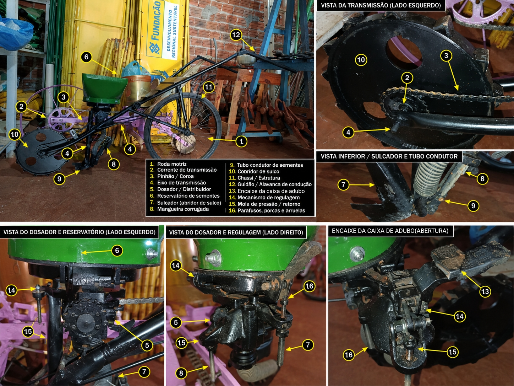

- Roda motriz
- Chassi (quadro de bicicleta)
- Reservatório de sementes
- Corrente
- Coroa/pinhão
- Guidão/hastes (pés de cadeira)
- Sulcador
- Pedal (fechador de sulco)
- Sistema de transmissão
- Eixo
- Proteção de transmissão
- Dosador
- Alavanca de regulagem
- Suportes metálicos
- Molas
- Parafusos de regulagem
- Tubo condutor